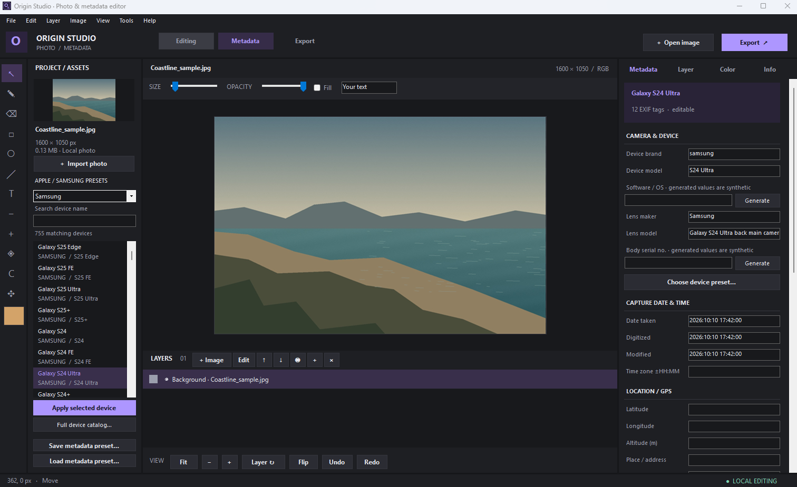
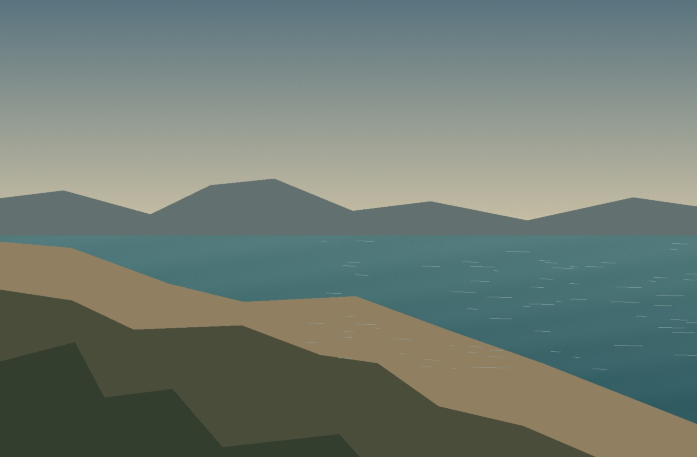

Build it up. Layer by layer.
Import photos as independent layers. Move, resize, rotate, reorder and blend them. Add editable text, gradients, shadows and outlines.
Build with layers. Find your colours. Make the details yours.
Photo editing and metadata control, together in one Windows app.
Windows 10 / 11 · .NET Framework 4.8 · No account needed

Camera identity, software, capture dates and GPS—ready to inspect and edit beside your photo.
A TOOLKIT WITH ROOM TO GROW
Start with a quick touch-up. Stay for the layers, masks and finer controls that let you take it further.

Image layerImport photos as independent layers. Move, resize, rotate, reorder and blend them. Add editable text, gradients, shadows and outlines.
Put a photo inside another layer’s silhouette. Use shape or image masks, paint to hide and reveal, then feather the edges or remove a background colour.
Fine-tune exposure, white balance, hue and individual colour channels. Stack masked adjustment layers, soften, sharpen or mosaic—and save your favourite grades.
A SIMPLE WAY THROUGH
Open an image and its existing metadata. Import more photos as layers when your idea needs them.
Paint, compose, mask and adjust. Then set the camera, date and location details you want to export.
Export JPEG or PNG with EXIF and XMP. Save an .origin project to keep the composition editable.
ORIGIN STUDIO 1.1
A focused desktop workspace.
No account. Your photos stay local.
Maps and location search use the internet.
Requires Windows 10 / 11 and .NET Framework 4.8.
GOOD TO KNOW
Open JPEG, PNG, BMP, GIF (one still frame) and TIFF. Export JPEG or PNG with supported EXIF and XMP metadata. Save editable work as an .origin project. HEIC, RAW, PSD and video are not supported in version 1.1.
Photo editing and metadata processing happen on your computer. Maps and place search need an internet connection and send location queries to their map services. This website doesn’t upload or process your photos.
Yes. Place the photo directly above a transparent silhouette or filled shape, then enable Clip below. You can also use an image’s transparency or brightness as a mask and refine it with hide/reveal brushes.
Export saves to a separate output path. Use Save project to retain layers, masks and colour settings. Crop and canvas rotation/flip flatten the composition; Undo restores its earlier layers.
Save your project, close the older app and run the new installer. Use the updated desktop or Start menu shortcut. Version 1.1 opens 1.0 projects; projects saved by 1.1 need 1.1 or later.